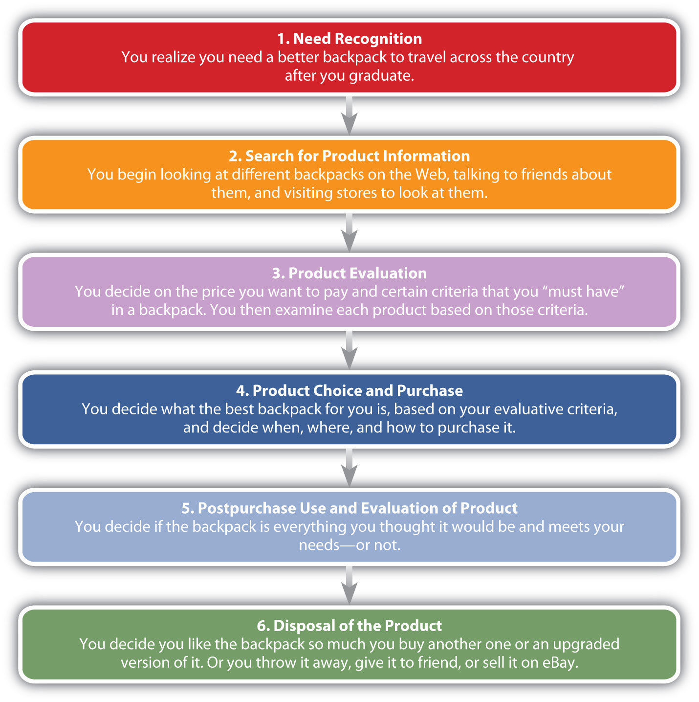

As you have seen, many factors influence a consumer’s behavior. Depending on a consumer’s experience and knowledge, some consumers may be able to make quick purchase decisions and other consumers may need to get information and be more involved in the decision process before making a purchase. The level of involvement reflects how personally important or interested you are in consuming a product and how much information you need to make a decision. The level of involvement in buying decisions may be considered a continuum from decisions that are fairly routine (consumers are not very involved) to decisions that require extensive thought and a high level of involvement. Whether a decision is low, high, or limited, involvement varies by consumer, not by product, although some products such as purchasing a house typically require a high-involvement for all consumers. Consumers with no experience purchasing a product may have more involvement than someone who is replacing a product.
You have probably thought about many products you want or need but never did much more than that. At other times, you’ve probably looked at dozens of products, compared them, and then decided not to purchase any one of them. When you run out of products such as milk or bread that you buy on a regular basis, you may buy the product as soon as you recognize the need because you do not need to search for information or evaluate alternatives. As Nike would put it, you “just do it.” Low-involvement decisions are, however, typically products that are relatively inexpensive and pose a low risk to the buyer if she makes a mistake by purchasing them.
Consumers often engage in routine response behaviorWhen consumers make automatic purchase decisions based on limited information or information they have gathered in the past. when they make low-involvement decisions—that is, they make automatic purchase decisions based on limited information or information they have gathered in the past. For example, if you always order a Diet Coke at lunch, you’re engaging in routine response behavior. You may not even think about other drink options at lunch because your routine is to order a Diet Coke, and you simply do it. Similarly, if you run out of Diet Coke at home, you may buy more without any information search.
Some low-involvement purchases are made with no planning or previous thought. These buying decisions are called impulse buyingPurchases that occur with no planning or forethought.. While you’re waiting to check out at the grocery store, perhaps you see a magazine with Angelina Jolie and Brad Pitt on the cover and buy it on the spot simply because you want it. You might see a roll of tape at a check-out stand and remember you need one or you might see a bag of chips and realize you’re hungry or just want them. These are items that are typically low-involvement decisions. Low-involvement decisionsProducts that carry a low risk of failure or have a low price tag for a specific individual or group making the decision. aren’t necessarily products purchased on impulse, although they can be.
By contrast, high-involvement decisionsProducts that carry a high price tag or high level of risk to the individual or group making the decision. carry a higher risk to buyers if they fail, are complex, and/or have high price tags. A car, a house, and an insurance policy are examples. These items are not purchased often but are relevant and important to the buyer. Buyers don’t engage in routine response behavior when purchasing high-involvement products. Instead, consumers engage in what’s called extended problem solvingPurchasing decisions in which a consumer gathers a significant amount of information before making a decision., where they spend a lot of time comparing different aspects such as the features of the products, prices, and warranties.
High-involvement decisions can cause buyers a great deal of postpurchase dissonance (anxiety) if they are unsure about their purchases or if they had a difficult time deciding between two alternatives. Companies that sell high-involvement products are aware that postpurchase dissonance can be a problem. Frequently, they try to offer consumers a lot of information about their products, including why they are superior to competing brands and how they won’t let the consumer down. Salespeople may be utilized to answer questions and do a lot of customer “hand-holding.”
Limited problem solving falls somewhere between low-involvement (routine) and high-involvement (extended problem solving) decisions. Consumers engage in limited problem solvingPurchasing decisions made based on consideration of some outside information. when they already have some information about a good or service but continue to search for a little more information. Assume you need a new backpack for a hiking trip. While you are familiar with backpacks, you know that new features and materials are available since you purchased your last backpack. You’re going to spend some time looking for one that’s decent because you don’t want it to fall apart while you’re traveling and dump everything you’ve packed on a hiking trail. You might do a little research online and come to a decision relatively quickly. You might consider the choices available at your favorite retail outlet but not look at every backpack at every outlet before making a decision. Or you might rely on the advice of a person you know who’s knowledgeable about backpacks. In some way you shorten or limit your involvement and the decision-making process.
Products, such as chewing gum, which may be low-involvement for many consumers often use advertising such as commercials and sales promotions such as coupons to reach many consumers at once. Companies also try to sell products such as gum in as many locations as possible. Many products that are typically high-involvement such as automobiles may use more personal selling to answer consumers’ questions. Brand names can also be very important regardless of the consumer’s level of purchasing involvement. Consider a low- versus high-involvement decision—say, purchasing a tube of toothpaste versus a new car. You might routinely buy your favorite brand of toothpaste, not thinking much about the purchase (engage in routine response behavior), but not be willing to switch to another brand either. Having a brand you like saves you “search time” and eliminates the evaluation period because you know what you’re getting.
When it comes to the car, you might engage in extensive problem solving but, again, only be willing to consider a certain brand or brands. For example, in the 1970s, American-made cars had such a poor reputation for quality that buyers joked that a car that’s “not Jap [Japanese made] is crap.” The quality of American cars is very good today, but you get the picture. If it’s a high-involvement product you’re purchasing, a good brand name is probably going to be very important to you. That’s why the manufacturers of products that are typically high-involvement decisions can’t become complacent about the value of their brands.
1970s American Cars
http://www.youtube.com/watch?v=pjzpx_jUUA0Today, Lexus is the automotive brand that experiences the most customer loyalty. For a humorous, tongue-in-cheek look at why the brand reputation of American carmakers suffered in the 1970s, check out this clip.
Figure 3.9 "Stages in the Consumer’s Purchasing Process" outlines the buying stages consumers go through. At any given time, you’re probably in a buying stage for a product or service. You’re thinking about the different types of things you want or need to eventually buy, how you are going to find the best ones at the best price, and where and how will you buy them. Meanwhile, there are other products you have already purchased that you’re evaluating. Some might be better than others. Will you discard them, and if so, how? Then what will you buy? Where does that process start?
Figure 3.9 Stages in the Consumer’s Purchasing Process
You plan to backpack around the country after you graduate and don’t have a particularly good backpack. You realize that you must get a new backpack. You may also be thinking about the job you’ve accepted after graduation and know that you must get a vehicle to commute. Recognizing a need may involve something as simple as running out of bread or milk or realizing that you must get a new backpack or a car after you graduate. Marketers try to show consumers how their products and services add value and help satisfy needs and wants. Do you think it’s a coincidence that Gatorade, Powerade, and other beverage makers locate their machines in gymnasiums so you see them after a long, tiring workout? Previews at movie theaters are another example. How many times have you have heard about a movie and had no interest in it—until you saw the preview? Afterward, you felt like you had to see it.
For products such as milk and bread, you may simply recognize the need, go to the store, and buy more. However, if you are purchasing a car for the first time or need a particular type of backpack, you may need to get information on different alternatives. Maybe you have owned several backpacks and know what you like and don’t like about them. Or there might be a particular brand that you’ve purchased in the past that you liked and want to purchase in the future. This is a great position for the company that owns the brand to be in—something firms strive for. Why? Because it often means you will limit your search and simply buy their brand again.
If what you already know about backpacks doesn’t provide you with enough information, you’ll probably continue to gather information from various sources. Frequently people ask friends, family, and neighbors about their experiences with products. Magazines such as Consumer Reports (considered an objective source of information on many consumer products) or Backpacker Magazine might also help you. Similar information sources are available for learning about different makes and models of cars.
Internet shopping sites such as Amazon.com have become a common source of information about products. Epinions.com is an example of consumer-generated review site. The site offers product ratings, buying tips, and price information. Amazon.com also offers product reviews written by consumers. People prefer “independent” sources such as this when they are looking for product information. However, they also often consult non-neutral sources of information, such advertisements, brochures, company Web sites, and salespeople.
Obviously, there are hundreds of different backpacks and cars available. It’s not possible for you to examine all of them. In fact, good salespeople and marketing professionals know that providing you with too many choices can be so overwhelming that you might not buy anything at all. Consequently, you may use choice heuristics or rules of thumb that provide mental shortcuts in the decision-making process. You may also develop evaluative criteria to help you narrow down your choices. Backpacks or cars that meet your initial criteria before the consideration will determine the set of brands you’ll consider for purchase.
Evaluative criteriaCertain characteristics of products consumers consider when they are making buying decisions. are certain characteristics that are important to you such as the price of the backpack, the size, the number of compartments, and color. Some of these characteristics are more important than others. For example, the size of the backpack and the price might be more important to you than the color—unless, say, the color is hot pink and you hate pink. You must decide what criteria are most important and how well different alternatives meet the criteria.
Companies want to convince you that the evaluative criteria you are considering reflect the strengths of their products. For example, you might not have thought about the weight or durability of the backpack you want to buy. However, a backpack manufacturer such as Osprey might remind you through magazine ads, packaging information, and its Web site that you should pay attention to these features—features that happen to be key selling points of its backpacks. Automobile manufacturers may have similar models, so don’t be afraid to add criteria to help you evaluate cars in your consideration set.
With low-involvement purchases, consumers may go from recognizing a need to purchasing the product. However, for backpacks and cars, you decide which one to purchase after you have evaluated different alternatives. In addition to which backpack or which car, you are probably also making other decisions at this stage, including where and how to purchase the backpack (or car) and on what terms. Maybe the backpack was cheaper at one store than another, but the salesperson there was rude. Or maybe you decide to order online because you’re too busy to go to the mall. Other decisions related to the purchase, particularly those related to big-ticket items, are made at this point. For example, if you’re buying a high-definition television, you might look for a store that will offer you credit or a warranty.
At this point in the process you decide whether the backpack you purchased is everything it was cracked up to be. Hopefully it is. If it’s not, you’re likely to suffer what’s called postpurchase dissonanceSituations that occur when experiences do not match expectations and consumers rethink their decisions after purchasing products and wonder if they made the best decision.. You might call it buyer’s remorse. Typically, dissonance occurs when a product or service does not meet your expectations. Consumers are more likely to experience dissonance with products that are relatively expensive and that are purchased infrequently.
You want to feel good about your purchase, but you don’t. You begin to wonder whether you should have waited to get a better price, purchased something else, or gathered more information first. Consumers commonly feel this way, which is a problem for sellers. If you don’t feel good about what you’ve purchased from them, you might return the item and never purchase anything from them again. Or, worse yet, you might tell everyone you know how bad the product was.
Companies do various things to try to prevent buyer’s remorse. For smaller items, they might offer a money back guarantee or they might encourage their salespeople to tell you what a great purchase you made. How many times have you heard a salesperson say, “That outfit looks so great on you!” For larger items, companies might offer a warranty, along with instruction booklets, and a toll-free troubleshooting line to call or they might have a salesperson call you to see if you need help with product. Automobile companies may offer loaner cars when you bring your car in for service.
Companies may also try to set expectations in order to satisfy customers. Service companies such as restaurants do this frequently. Think about when the hostess tells you that your table will be ready in 30 minutes. If they seat you in 15 minutes, you are much happier than if they told you that your table would be ready in 15 minutes, but it took 30 minutes to seat you. Similarly, if a store tells you that your pants will be altered in a week and they are ready in three days, you’ll be much more satisfied than if they said your pants would be ready in three days, yet it took a week before they were ready.
There was a time when neither manufacturers nor consumers thought much about how products got disposed of, so long as people bought them. But that’s changed. How products are being disposed of is becoming extremely important to consumers and society in general. Computers and batteries, which leech chemicals into landfills, are a huge problem. Consumers don’t want to degrade the environment if they don’t have to, and companies are becoming more aware of this fact.
Take for example Crystal Light, a water-based beverage that’s sold in grocery stores. You can buy it in a bottle. However, many people buy a concentrated form of it, put it in reusable pitchers or bottles, and add water. That way, they don’t have to buy and dispose of plastic bottle after plastic bottle, damaging the environment in the process. Windex has done something similar with its window cleaner. Instead of buying new bottles of it all the time, you can purchase a concentrate and add water. You have probably noticed that most grocery stores now sell cloth bags consumers can reuse instead of continually using and discarding of new plastic or paper bags.
Other companies are less concerned about conservation than they are about planned obsolescenceA deliberate effort by companies to make their products obsolete, or unusable, after a period of time.. Planned obsolescence is a deliberate effort by companies to make their products obsolete, or unusable, after a period of time. The goal is to improve a company’s sales by reducing the amount of time between the repeat purchases consumers make of products. When a software developer introduces a new version of product, it is usually designed to be incompatible with older versions of it. For example, not all the formatting features are the same in Microsoft Word 2007 and 2010. Sometimes documents do not translate properly when opened in the newer version. Consequently, you will be more inclined to upgrade to the new version so you can open all Word documents you receive.
Products that are disposable are another way in which firms have managed to reduce the amount of time between purchases. Disposable lighters are an example. Do you know anyone today that owns a nondisposable lighter? Believe it or not, prior to the 1960s, scarcely anyone could have imagined using a cheap disposable lighter. There are many more disposable products today than there were in years past—including everything from bottled water and individually wrapped snacks to single-use eye drops and cell phones.
Consumer behavior looks at the many reasons why people buy things and later dispose of them. Consumers go through distinct buying phases when they purchase products: (1) realizing the need or wanting something, (2) searching for information about the item, (3) evaluating different products, (4) choosing a product and purchasing it, (5) using and evaluating the product after the purchase, and (6) disposing of the product. A consumer’s level of involvement is how interested he or she is in buying and consuming a product. Low-involvement products are usually inexpensive and pose a low risk to the buyer if he or she makes a mistake by purchasing them. High-involvement products carry a high risk to the buyer if they fail, are complex, or have high price tags. Limited-involvement products fall somewhere in between.